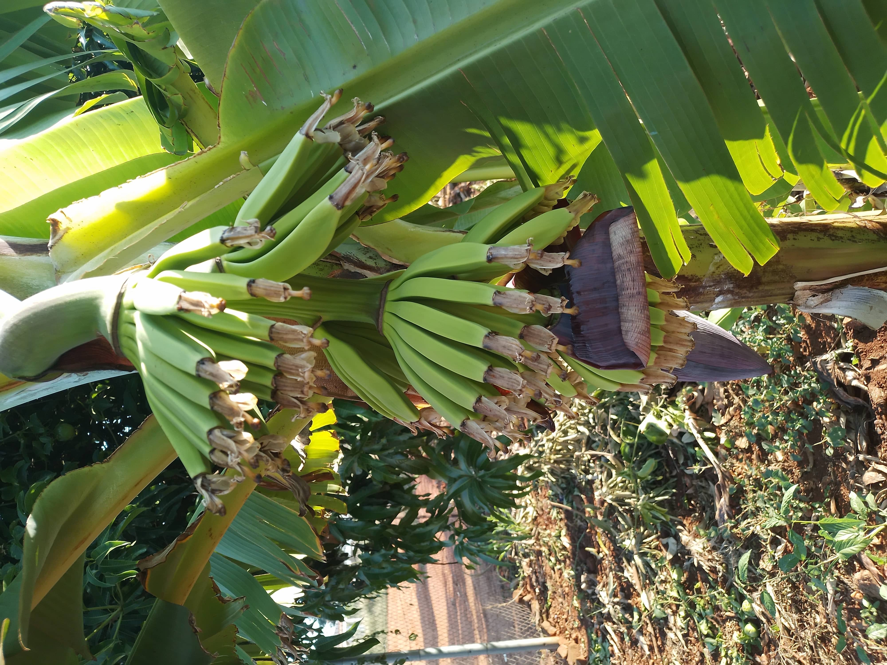
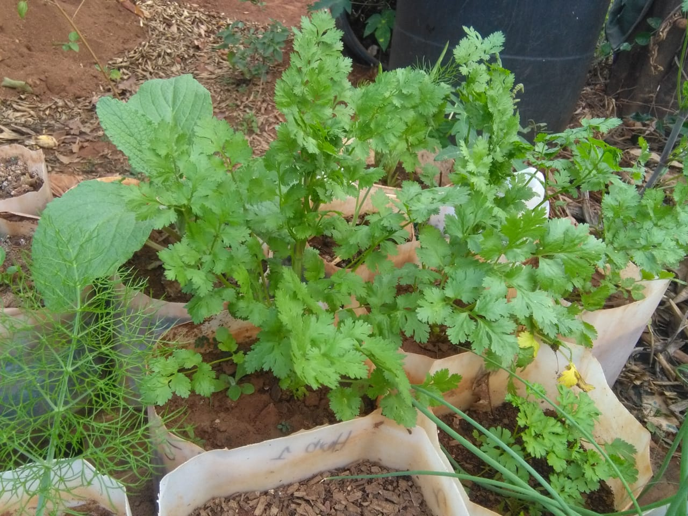

Cultivating Health &
Harvesting Joy
Pfunzo's garden has been a little symbol of nutrition and freshness. We bring the farm directly to your table with love.
From our soil to your soul, we cultivate health and harvest joy in every bite.
Why choose us
Grown with care, Picked for you.
100% Organic
Grown naturally without harmful chemicals, ensuring pure nutrition for your family.
Locally Grown
Rooted in Thohoyandou soil, supporting local agriculture and community.
Fresh Harvest
Picked at the peak of ripeness and delivered fresh to maintain maximum flavour.
Fresh from the garden
Seasonal Favorites
View All Products
Vegetable
Cabbage
Fresh, crisp cabbage grown with care in our garden.

Fruit
Banana
A variety of sweet and healthy fruits from our trees.

Herb
Coriander
Fragrant coriander (dhania) to spice up your cooking.
Seed to Table Journey
Careful Sowing
We select the finest non-GMO seeds, perfectly suited for Thohoyandou's rich soil.
Natural Growth
Our plants grow under the Limpopo sun, nourished by pure water and organic compost.
Peak Harvest
Every vegetable and fruit is hand-picked at its nutritional peak for maximum flavor.
Direct to You
From our garden to your kitchen, ensuring the shortest journey for the freshest taste.
Kind Words
What Our Neighbors Say
“The freshest spinach in Thohoyandou! You can really taste the difference between these and store-bought vegetables.”
“Pfunzo’s Garden has become my go-to for herbs. The coriander is so fragrant and stays fresh for much longer.”
“I love knowing exactly where my food comes from. The quality is consistent and the service is always friendly.”